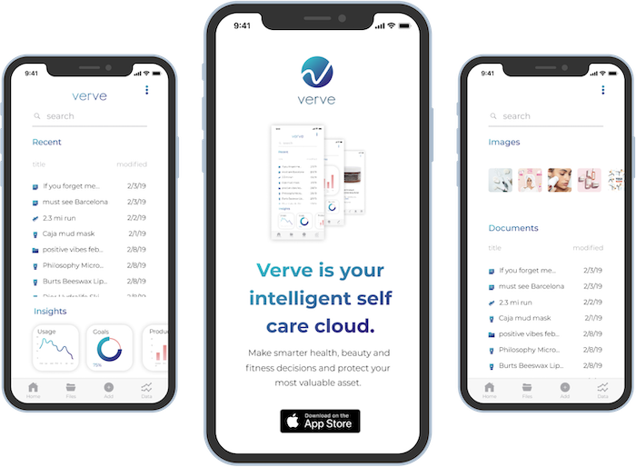
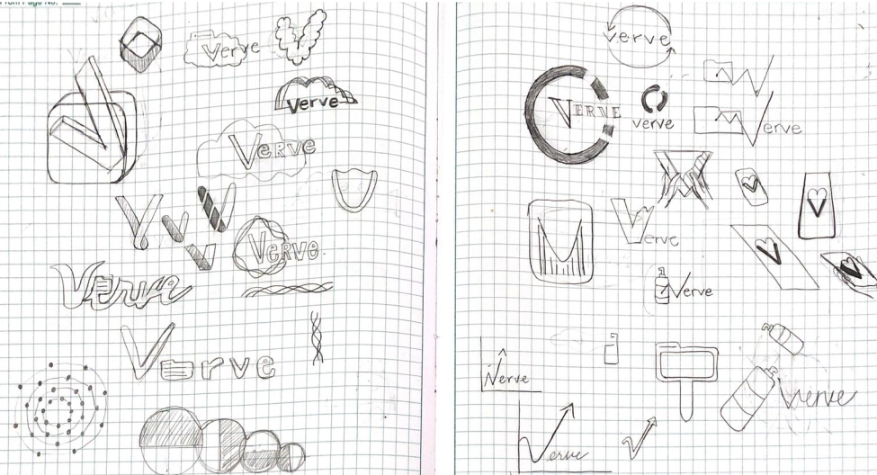
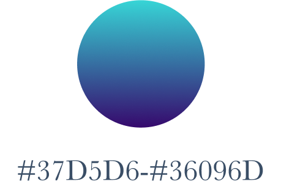
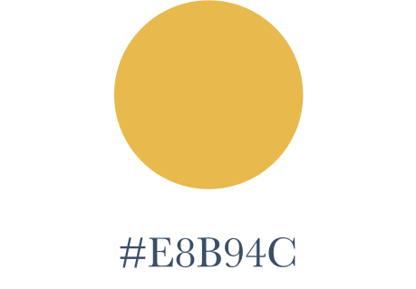
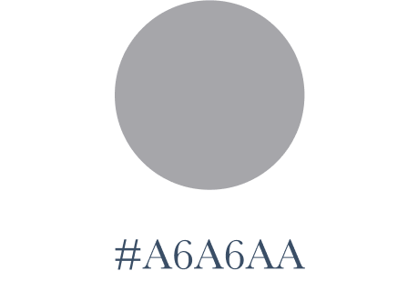
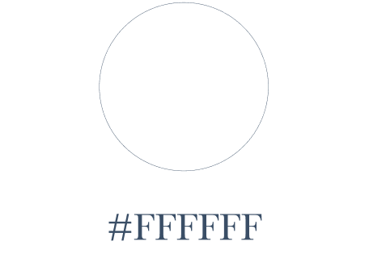

Verve for iOS is a cloud storage app that makes it easier for users to manage a healthy lifestyle while staying organized.
Verve for iOS is a cloud storage app that makes it easier for users to manage a healthy lifestyle while staying organized.
User Researcher
UX Design
Visual Design
Branding & Identity
Competitive Analysis
User Surveys
User Personas
User Stories & Flows
Wireframes
User Testing
Brand Identity
Visual Design
Hi-Fidelity Prototype
Survey Monkey
Figma
Marvel
Maze
Usability Hub
Verve for iOS is a cloud storage app that promotes good health and wellness through organization and collaboration. While allowing users to upload, organize and share any kind of document, Verve places a priority on files that relate to your self care products, notes and activities and provides useful insights on how to make healthier choices to achieve your goals.
The client challenged us to find an entry into the cloud storage market with a unique set of features to meet the needs of a particular audience.
I identified a niche audience and market opportunity for a cloud storage solution that encourages better grooming, health and wellness. I designed Verve for iOS to give users a streamlined cloud storage solution with the added benefit of useful insights.
I embarked on the project by first surveying a group of participants to better understand how they use cloud storage.
| 67% | 50% |
| prioritize physical, mental & emotional wellbeing | are motivated to achieve goals with social support |
| 94% | 67% |
| create or view files on their mobile device | would pay more for advanced features |
The survey provided great insight into the attitudes and opinions of potential users, and I constructed two personas based on the survey responses to represent the trends I spotted.
I analyzed four competitors, Google Drive, Dropbox, Lovelyloot and Flöka and LovelyLoot. The most important revelation was that while general providers are overlooking niches, niche providers are severely limiting functionality. Neither provides both general use and opportunity for specialization.

|
|||
| S | W | O | T |
| Industry Recognition; integration with other Google Services | Stale UI evolution; big data distrust | Improve mobile experience and UI; allow more customization | Smaller companies appealing to those distrustful of large corporations; niche providers catering to smaller groups more powerfully |

|
| S | W | O | T |
| Robust features; UI updates on trend | Low freemium offerings; Paper mobile app not integrated with documents app; big data distrust | Offer more freemium bandwidth; allow more customization | lower cost competitiors; small data niche providers catering to smaller groups more powerfully |

|
| S | W | O | T |
| Strong niche definition; clean and simple interface; strong product catalog for easily adding your items | Limited to just beauty; low brand recognition | Offer overall wellness product tracking; expand file type compatibility | Limited options may encourage users to turn to more robust, less niche specific alternatives. |

|
| S | W | O | T |
| Strong niche definition, allows for specific customer targeting | MVP in initial release, but feature bloat makes it hard to know where to begin; UI deficiencies; new to market and low recognition | Expand to allow sharing; make it more gender neutral; expand file type compatibility | Slow development may lose engagement; feature bloat may lead to user fatigue; users may turn to a simpler product. |
With a clear picture of the target audience, I was able to document the high priority user stories that a user would need to fulfill.
| As a new user, | I want to sign up |
| As a new user, | I want to upload a file or folder from a device |
| As a new user, | I want to upload content from the web |
| As a new user, | I want to create a new folder |
| As a new user, | I want to tag or group content |
| As a new user, | I want to create content |
| As a returning user, | I want to view existing files or folders |
| As a returning user, | I want to view collaboration from other users |
| As a returning user, | I want to provide collaboration to other users |
| As a returning user, | I want to share content with a collaborator |
| As a returning user, | I want to add and remover users |
| As a returning user, | I want to adjust permissions for users |
| As a returning user, | I want to share content to social media |
After initially creating one large flow to represent the three main processes users would undertake, I divided them into four user flow groups to be more digestible:
1. Onboard
2. Upload or create content
3. Browse, edit, collaborate and share content
4. Analyze insights

I created a site map and detailed the content strategy for further clarity on how the solution would be organized, page by page. I would come to find that rather than being an exhaustive accounting for every page the final product would have, it was more of an overview including the key pages.
Laying out the pages and content in this early stage revealed many questions about how the product would develop.

I found that there were screens that should be consolidated, some that were not useful and some that were overlooked in sketching, such as the difference between the dashboard of a new user vs that of a returning user and the view of a text input window after a user enters the text and before they proceed to click a link. As a result, my sketches are different from my lo-fi wireframes but reflect a series of digital iterations after these discoveries and review during a design critique.


I recruited three user testers to evaluate the protoype’s usability. They were asked to complete three tasks.
1. Sign up for an account
2. Add a piece of content
3. Organize a piece of content
Key Takeaways
I should revisit the availability of the free signup pathway and the wording of the buttons on the landing page to better indicate how a new user can get started.
I need to consider adjusting a future testing script to better reflect the sorts of concerns that I expect to arise during testing and I need to be more explicit about the directions given, such as asking users to sign up for the premium account rather than leaving the choice up to them.
I engaged in brainstorming and mindmapping exercised to narrow down naming ideas and settled on Verve because it was a short moniker that embodied the clean energy and vitality the app needed to project.
The branding should reflect the app’s positioning at the intersection of self care and data while maintaining a clean and sleek interface.
My initial logo sketches explored ways to incorporate a monographic “v” and imagery to indicate the cloud and data insight aspects of the service.
I created digital refinements of a few of the ideas and conducted an early round of preference tests for clarity on which ideas were the strongest.

Based on the results of an early preference test, I reduced my number of digital sketches and further refined them.

In a second round of preference tests and a subsequent design critique, Option 2 performed the best. While close to being a solid solution, because of its simplicity, implementation of the V monogram and allusion to the statistical data of the Verve insights and data features, it did require some minor adjustments.

I chose Geosans Light as the brand typefaces because it delicately compliments the bold shapes of the Verve logo mark while remaining minimal and modern.
I chose Montserrat as a complimentary typeface for use throughout the app for its readability. As with the brand typefaces I wanted to use a font that would be minimal and modern.
I began to research which colors that would help users establish expectations early on in their interaction with the app. I considered what various colors and combinations would convey, energy, health, wellness and purity. I looked at the colors used by competitors and started out with preference testing a few color palettes.
A blue tone palette was preferred by 63% of respondents. This confirmed my early inclinations about colors that would be suitable. I also found that blue was heavily used by competitors and color theory research revealed that this is a reliable and trusted choice, so not an unpopular one.
Wanting to add more dynamism and depth to my color palette, I tested user response to combining gradients. This was preferred 67% of the time.
Based on client feedback, I made slight adjustments to the palette and decided to use a gradient shade of blue as the primary color, in combination with a gradient shade of pink, in combination with gray, white, black and yellow.
   I proceeded to prepare a full style guide that included the color palette along side additional branding guidelines such as typography, logo usage, and iconography.
As I created hi-fi mockups, I discovered design elements that previously seemed to recede into the background of the app, but in actuality needed to be considered as part of a design pattern. Design features like process tracking dots and text captioning on menu icons, needed to be considered as I was developing high fidelity mockups.


There were still a few design decisions that I was uncertain about. Rather than choosing them based on my own preferences, it was important to get feedback from potential users. I preference tested various components such as button style, insights dashboard layout and landing page copywriting.


I discovered that a solid blue button style, a one-screen dashboard view and direct, unquestioning text were overwhelmingly preferred. These revelations guided me as made a few changes before retesting my prototype.
Once again, I recruited three user testers to evaluate the prototype’s usability. They were asked to complete three tasks.
1. Sign up for an account
2. Add a piece of contentt
3. Organize a piece of content
Key Takeaways
Following testing, I concluded that the application is best used by those with some existing familiarity with mobile applications, such as my target audience. One of the usability testers had limited experience with mobile applications and struggled with identifying visual cues indicating next steps. Further consideration could be given to engaging users with limited experience, but this called for a design approach that would be overly explanatory for our target user. Even users familiar with mobile apps appeared to be in need of better cues and directions in menu navigation.
I considered that usability testers were having difficulty in determining which upload option to use to create a new product. While they ultimately did it successfully, it required multiple attempts and consideration to determine which menu options to use so I adjusted the menu options.

Based on design critique feedback, I made improvements to the empty state dashboards, providing a boundary to more clearly indicate the emptiness of the repository and including a call to action to “add your first file”.

I also adjusted the photo and file uploading screens to adhere to iOS Human Interface Guidelines to avoid adding an unfamiliar process with minimal experience value. At this stage, the product met all of the needs of the initial client brief, the needs revealed through user research, accounted for the feedback received in testing and critiques and incorporated Human Interface Guidelines.

Survey design is an important part of starting a project on the right foot. You won’t get the answers to questions you don’t know to ask if you haven’t put great effort into considering what you may need to know later on in your design process.
When digital wireframing, it was tempting to create 1:1 screen adaptations from my sketches and paper wireframes. However, many steps and states are omitted by proceeding in that way. Empty states, interactive states and other intermediating screens need to be included as well.
Consider the ago old adage, don’t reinvent the wheel. I created an original image uploading process that increased the cognitive load of users but added nothing of additional value. It was far more useful to use the iOS Human Interface Guidelines processes for uploading files and images, because users would be familiar with it and not need to learn a new process.